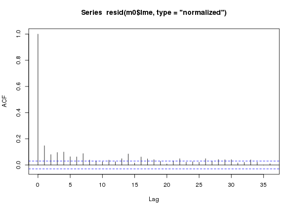
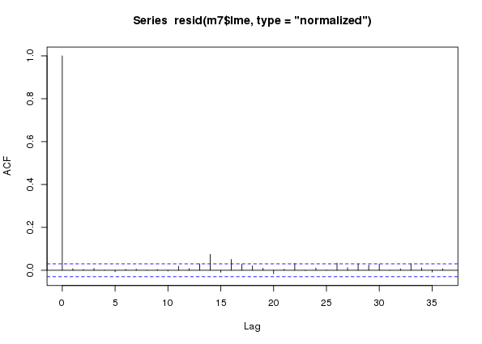
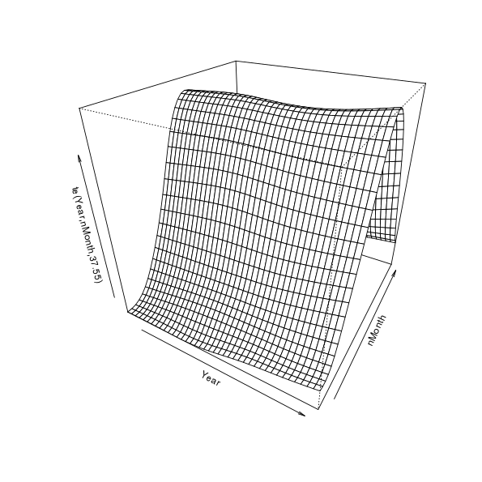
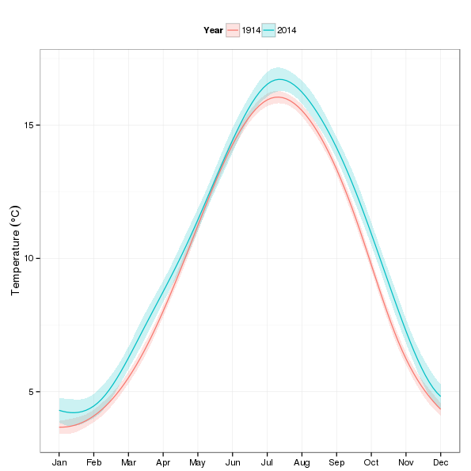
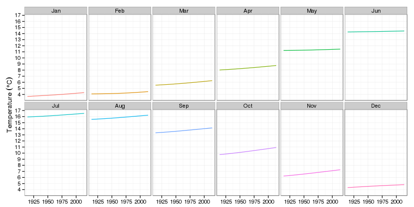
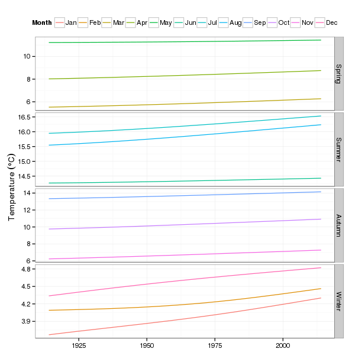

Climate change and spline interactions
Posted in
Tagged
GAM Time series Central England Temperature Splines Interactions
Blogroll
In a series of irregular posts1 I’ve looked at how additive models can be used to fit non-linear models to time series. Up to now I’ve looked at models that included a single non-linear trend, as well as a model that included a within-year (or seasonal) part and a trend part. In this trend plus season model it is important to note that the two terms are purely additive; no matter which January you are predicting for in a long timeseries, the seasonal effect for that month will always be the same. The trend part might shift this seasonal contribution up or down a bit, but all January’s are the same. In this post I want to introduce a different type of spline interaction model that will allow us to relax this additivity assumption and fit a model that allows the seasonal part of the model to change in time along with the trend.
As with previous posts, I’ll be using the Central England Temperature time series as an example. The data require a bit of processing to get them into a format useful for modelling, so I’ve written a little function — loadCET() — that downloads the data and processes it for you. To load the function into R, run the following
source(con <- url("http://bit.ly/loadCET", method = "libcurl"))
close(con)
cet <- loadCET()We also need a couple of packages for model fitting and plotting
library("mgcv")Loading required package: nlme
This is mgcv 1.8-9. For overview type 'help("mgcv-package")'.
library("ggplot2")Loading required package: methods
OK, let’s begin…
As previously, if we think about a time series where observations were made on a number of occasions within any given year over a number of years, we may want to model the following features of the data
- any trend or long term change in the level of the time series, and
- any seasonal or within-year variation, and
- any variation in, or interaction between, the trend and seasonal features of the data.
In a previous post I tackled features 1 and 2, but it is feature 3 that is of interest now. Our model for features 1 and 2 was
\[ y = \beta_0 + f_{\mathrm{seasonal}}(x_1) + f_{\mathrm{trend}}(x_2) + \varepsilon, \quad \varepsilon \sim N(0, \sigma^2\mathbf{\Lambda}) \]
where \(\beta_0\) is the intercept, \(f_{\mathrm{seasonal}}\) and \(f_{\mathrm{trend}}\) are smooth functions for the seasonal and trend features we’re interested in, and \(x_1\) and \(x_2\) are to covariate data providing some form of time indicators for the within-year and between year times.
To allow for an interaction between \(f_{\mathrm{seasonal}}\) and \(f_{\mathrm{trend}}\) we will need to fit the following modle instead
\[ y = \beta_0 + f(x_1, x_2) + \varepsilon, \quad \varepsilon \sim N(0, \sigma^2\mathbf{\Lambda}) \]
Notice now that \(f()\) is a smooth function of our two time variables, and for simplicity’s sake let’s say that the within-year variable will just be the numeric month indicator (1, 2, …, 12) and the between year variable will be the calendar year of the observation. In previous posts I’ve used a derived time variable instead of calendar year for the trend, but doing that here is largely redundant; the data seem well modelled even if we don’t allow for a trend within-year, and doing some useful or interesting things with the model once fitted is much simplified if we just use observation year for the trend.
In pseudo mgcv code we are going to fit the following model
mod <- gam(y = te(x1, x2), data = foo)The te() represents a tensor product smooth of the indicated variables. We won’t be using s() because our two time variables are unrelated, and we want to allow for more variation in one of the variables than the other; multivariate s() smooths are isotropic, so they’re good for things like spatial coordinates but not things measured in different units or having more variation in one variable than the other. I’m not going to go into the detail of tensor product smooths; that’s covered in Simon Wood’s rather excellent book.
Another detail that we need to consider is knot placement. Previously I used a cyclic spline for the within-year term and allowed gam() to select the knots for the spline from the data. This meant that boundary knots were at months 1 and 12. This worked ok where I’ve been modelling daily data so the within-year term is in Julian day say, as the knots would be at 1 and 366 and it didn’t matter much if December 31st was exactly the same as January 1st. But with monthly data like this it is a bit of a problem; we don’t expect December and January to be exactly the same. This problem was anticipated in the comments of the previous post by a reader and I sort of dismissed it. Well, I was wrong and it took me until I set about interrogating the model that I’ll fitcshortly to realise it.
What we need to do is place boundary knots just beyond the data, such that the distance between December and January is the same as the distance between any other month. Placing boundary knots at (0.5, 12.5) achieves this. We then have 10 more interior knots to play with (assuming 12 knots overall, which is what I specify for k below), so I just place those, spread evenly between 1 and 12 (the inner seq() call).
knots <- list(nMonth = c(0.5, seq(1, 12, length = 10), 12.5))Having dealt with those details, we can fit some models; here I fit models with the same fixed effects parts (the spline interaction) but with differing stochastic trend models in the residuals.
To assist our selection of the stochastic model in the residuals, we fit a naive model that assumes independence of observations
m0 <- gamm(Temperature ~ te(Year, nMonth, bs = c("cr","cc"), k = c(10,12)),
data = cet, method = "REML", knots = knots)Plotting the autocorrelation function (ACF) of the normalized residuals from the $lme part of this model fit we can start to think about plausible models for the residuals. Remember though that we are going to nest this within-year, so we’re only going to be able to do anything about the first 12 lags even though I’ll still show the default number
plot(acf(resid(m0$lme, type = "normalized")))
m0 a naive additive model assuming conditional independence of observations fitted to the CET time seriesIn the ACF we see lingering correlations out to lag 7 or 8 and then longer-range lags out beyond a year. These latter lags are the between-year temporal signal that we aren’t capturing perfectly with the temporal trend component of the model fit. We’re going to ignore these, for now at least — I may return to look at these in a future post.
From the ACF (and a bit of fiddling, err… EDA) it looks like AR terms are needed to model this residual autocorrelation. Hence the stochatsic trend models are AR(p), for p in {1, 2, …, 8}. The ARMA is nested within year, as previously; with the switch to modelling using calendar year for the trend term, I would anticipate stronger within year autocorrelation in residuals, or possible a more complex structure, than observed in earlier fits2.
If you want to fit all the models great, I’ll get to you in a moment — just don’t look at the value of p in the chunk below! If you just want to skip ahead, fit the following model and then move right along to the next section, thus saving yourself in the region of 10 minutes (on a fast as hell Xeon workstation) of thumb twiddling
ctrl <- list(niterEM = 0, optimMethod="L-BFGS-B", maxIter = 100, msMaxIter = 100)
m <- gamm(Temperature ~ te(Year, nMonth, bs = c("cr","cc"), k = c(10,12)),
data = cet, method = "REML", control = ctrl, knots = knots,
correlation = corARMA(form = ~ 1 | Year, p = 7))For those of you in for the long haul, here’s a loop3 that will fit the models with varying AR terms for us
ctrl <- list(niterEM = 0, optimMethod="L-BFGS-B", maxIter = 100, msMaxIter = 100)
for (i in 1:8) {
m <- gamm(Temperature ~ te(Year, nMonth, bs = c("cr","cc"), k = c(10,12)),
data = cet, method = "REML", control = ctrl, knots = knots,
correlation = corARMA(form = ~ 1 | Year, p = i))
assign(paste0("m", i), m)
}A generalised likelihood ratio test can be used to test for which correlation structure fits best
anova(m1$lme, m2$lme, m3$lme, m4$lme, m5$lme, m6$lme, m7$lme, m8$lme) Model df AIC BIC logLik Test L.Ratio p-value
m1$lme 1 6 14849.98 14888.13 -7418.988
m2$lme 2 7 14836.78 14881.29 -7411.389 1 vs 2 15.197206 0.0001
m3$lme 3 8 14810.73 14861.60 -7397.365 2 vs 3 28.047345 <.0001
m4$lme 4 9 14784.63 14841.86 -7383.314 3 vs 4 28.101617 <.0001
m5$lme 5 10 14778.35 14841.95 -7379.177 4 vs 5 8.275739 0.0040
m6$lme 6 11 14776.49 14846.44 -7377.244 5 vs 6 3.865917 0.0493
m7$lme 7 12 14762.45 14838.77 -7369.227 6 vs 7 16.032363 0.0001
m8$lme 8 13 14764.33 14847.01 -7369.167 7 vs 8 0.119909 0.7291
Lo and behold, the AR(7) turns out to have the best fit as assessed by a range of metrics. If we now look at the ACF of the normalized residuals for this model we see that all the within-year autocorrelation has been accounted for, leaving a little bit of correlation at lags just longer than a year.
plot(acf(resid(m7$lme, type = "normalized")))
m7 an additive model with an AR(7) process in the residuals fitted to the CET time seriesAt this stage we can probably proceed without too much worry — although an AR(7) is quite a complex model to fit, so we should remain a little cautious.
Before we move on, to bring us up to speed with the people that jumped ahead, copy m7 into object m so the code in the next section works for you too.
m <- m7Interrogating the fitted model
I’m going to cut to the chase and look at the fitted model and use it to ask some questions about how temperature has changed both within and between years over the last 100 years. In part 2 of this post I’ll look at doing inference on the fitted model, but for now I’ll skip that.
First, let’s visualise the fitted spline; this requires a 3D plot so it gets somewhat tricky to really see what’s going on, but here goes
plot(m$gam, pers = TRUE)
This is quite a useful visualisation as it illustrates how the model represents longer term trends, seasonal cycles, and how these vary in relation to one another. Viewed one way, we have estimates of trends over years for each month. Alternatively, we could see the model as giving an estimate of the seasonal cycle for each year. Each year can have a different seasonal cycle and each month a different trend. If there was no interaction, there would be no change in the seasonal pattern other time — or all months would have the same trend over years. This figure also sucks; it’s 3D but static and the scale of the trend and any change in seasonal cycle over time is swamped by the magnitude of the seasonal cycle itself.
Predict monthly temperature for the years 1914 and 2014
In the first illustrative use of the fitted model, I’ll predict within-year temperatures for two years — 1914 and 2014 — to look at how different the seasonal cycle is after a 100 years4 of climate change (time). The first step is to produce the values of the covariates that we want to predict at. In the snippet below I generate 100 1914s followed by 100 2014s for Year, and within these years we have 100 evenly-spaced values on the interval (1,12) for nMonth.
pdat <- with(cet,
data.frame(Year = rep(c(1914, 2014), each = 100),
nMonth = rep(seq(1, 12, length = 100), times = 2)))Next, the predict() method generates predicted values for the new data pairs, with standard errors for each predicted value
pred <- predict(m$gam, newdata = pdat, se.fit = TRUE)
crit <- qt(0.975, df = df.residual(m$gam)) # ~95% interval critical t
pdat <- transform(pdat, fitted = pred$fit, se = pred$se.fit, fYear = as.factor(Year))
pdat <- transform(pdat,
upper = fitted + (crit * se),
lower = fitted - (crit * se))The first transform() adds fitted, se, and fYear variables to pdat for the predictions, their standard errors, and a factor for Year that I’ll use in plotting shortly. The second transform() call adds upper and lower variables containing the upper and lower pointwise confidence bounds, here for an approximate 95% interval.
A plot, using the ggplot2 package, of the predicted monthly temperatures for 1914 and 2014 is created in the next chunk. It’s a little involved as I wanted to modify a few things and change the name of the legend to make it look nice — I’ve commented the lines to indicate what they do
p1 <- ggplot(pdat, aes(x = nMonth, y = fitted, group = fYear)) +
geom_ribbon(mapping = aes(ymin = lower, ymax = upper,
fill = fYear), alpha = 0.2) + # confidence band
geom_line(aes(colour = fYear)) + # predicted temperatures
theme_bw() + # minimal theme
theme(legend.position = "top") + # push legend to the top
labs(y = expression(Temperature ~ (degree*C)), x = NULL) +
scale_fill_discrete(name = "Year") + # correct legend name
scale_colour_discrete(name = "Year") +
scale_x_continuous(breaks = 1:12, # tweak where the x-axis ticks are
labels = month.abb, # & with what labels
minor_breaks = NULL)
p1
Looking at the plot, most of the action appears in the autumn and winter months.
Predict trends for each month, 1914–2014
The second use of the fitted model will be to predict trends in temperature for each month over the period 1914–2014. For this we need a different set of new values to predict at than before; here I repeat the values 1914–2012 twelve times each and the sequence 1, 2, …, 12 101 times, once per year of the period of interest.
pdat2 <- with(cet,
data.frame(Year = rep(1914:2014, each = 12),
nMonth = rep(1:12, times = 101)))Next we repeat the earlier steps to predict from the model and set up an object for plotting with ggplot()
pred2 <- predict(m$gam, newdata = pdat2, se.fit = TRUE)
## add predictions & SEs to the new data ready for plotting
pdat2 <- transform(pdat2,
fitted = pred2$fit, # predicted values
se = pred2$se.fit, # standard errors
fMonth = factor(month.abb[nMonth], # month as a factor
levels = month.abb))
pdat2 <- transform(pdat2,
upper = fitted + (crit * se), # upper and...
lower = fitted - (crit * se)) # lower confidence boundsThe first plot we’ll produce using these data is a plot of the trends faceted by fMonth
p2 <- ggplot(pdat2, aes(x = Year, y = fitted, group = fMonth)) +
geom_line(aes(colour = fMonth)) + # draw trend lines
theme_bw() + # minimal theme
theme(legend.position = "none") + # no legend
labs(y = expression(Temperature ~ (degree*C)), x = NULL) +
facet_wrap(~ fMonth, ncol = 6) + # facet on month
scale_y_continuous(breaks = seq(4, 17, by = 1),
minor_breaks = NULL) # nicer ticks
p2
The impression that most of the action is in the autumn and winter is again very apparent.
Predict trends for each month, 1914–2014, by quarter
Another visualisation of the same predictions is to group the data by quarter/season. For that we set up a variable Quarter in the pred2 data frame and assign particular months to the seasons.
pdat2$Quarter <- NA
pdat2$Quarter[pdat2$nMonth %in% c(12,1,2)] <- "Winter"
pdat2$Quarter[pdat2$nMonth %in% 3:5] <- "Spring"
pdat2$Quarter[pdat2$nMonth %in% 6:8] <- "Summer"
pdat2$Quarter[pdat2$nMonth %in% 9:11] <- "Autumn"
pdat2 <- transform(pdat2,
Quarter = factor(Quarter,
levels = c("Spring","Summer","Autumn","Winter")))Then we facet on Quarter, and we need a legend to help identify the months, we do a little fiddling to get a nice name
p3 <- ggplot(pdat2, aes(x = Year, y = fitted, group = fMonth)) +
geom_line(aes(colour = fMonth)) + # draw trend lines
theme_bw() + # minimal theme
theme(legend.position = "top") + # legend on top
scale_fill_discrete(name = "Month") + # nicer legend title
scale_colour_discrete(name = "Month") +
labs(y = expression(Temperature ~ (degree*C)), x = NULL) +
facet_grid(Quarter ~ ., scales = "free_y") # facet by Quarter
p3
Summary
In this post I’ve looked at how we can fit smooth models with smooth interactions between two variables. This allows the smooth effect one variable to vary as a smooth function of the second variable. This approach can be extended to additional variables as needed.
One of the things I’m not very happy with is the rather complex AR process in the model residuals. The AR(7) mopped up all the within-year residual autocorrelation but it appears that there is a trade-off here between fitting a more complex seasonal smooth or a more complex within-year AR process.
An important aspect that I haven’t covered in this post is whether the interaction model is an improvement in fit over a purely additive model of a trend in temperature with the same seasonal cycle superimposed. I’ll look at how we can do that in part 2.
Footnotes
Note that this code assumes that samples are provided in the data in their time order within year. This is the case here, but if it isn’t, you could do
form = ~ nMonth | Yearto tellgamm()about the correct ordering.↩︎I’m just being lazy; I could fit these models in parallel with the parallel package, but I’m caching this code chunk so, meh…↩︎
Yes, yes, yes, I know it’s 101 years…↩︎
Social